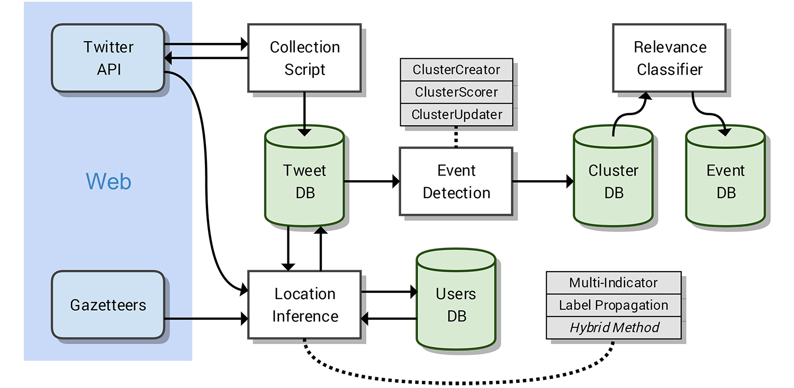

1. Guide¶
1.1. Installation¶
Below is a guide on how to setup and use the package. This package required Python 3. A number of other modules are required for the module to function correctly. Installing the module using pip should automatically include all of these modules, however they may need to be retrieved seperately.
Required modules and supported versions can be seen here: https://github.com/Humpheh/twied/blob/master/requirements.txt.
Pip Installation:
twied can be installed via pip:
pip install git+https://github.com/Humpheh/twied.git
Source Code:
The source code for twied can be retrieved from GitHub https://github.com/Humpheh/twied. This can be cloned using:
git clone https://github.com/Humpheh/twied.git
Example Scripts:
Example usage scripts can be seen in the GitHub repository under the directory /scripts/examples.
1.2. Example System¶
Below is an image which shows the layout of components within a system. This system was originally designed for use in the authors dissertation.
1.3. SLP Example¶
Below is an example of the slp method.
Warning
This implementation is not complete and will not work outright without further work.
"""
Testing the spatial label propagation algorithm.
"""
import logging
import sys
import pymongo
from configparser import NoOptionError
import twieds
from labelprop.inference import InferSL
# Must run this as a script
if __name__ == "__main__":
config = twieds.setup("logs/labelprop.log", "settings/locinf.ini")
# Connect to the MongoDB
logging.info("Connecting to MongoDB...")
client = pymongo.MongoClient(config.get("mongo", "address"), config.getint("mongo", "port"))
logging.info("Connected to MongoDB")
# Select the database and collection based off config
try:
db = client[config.get("mongo", "database")]
user_col = db["users"]
user_col.create_index([('user.id', pymongo.ASCENDING)], unique=True)
user_col.create_index([('user.screen_name', pymongo.ASCENDING)])
except NoOptionError:
logging.critical("Cannot connect to MongoDB database and collection. Config incorrect?")
sys.exit()
# Get the tweet collection
tweet_col = db[config.get("mongo", "collection")]
cursor = tweet_col.find({'geo': {'$ne': None}, 'locinf.sl.test': None})
infersl = InferSL(config, user_col, verbose=True)
for tweet in cursor:
print("\n\nNEXT USER", tweet['user']['screen_name'], ":\n")
if input(tweet) == "s":
continue
inf = infersl.infer(tweet['user']['id'], test=True)
print("\nInferred location:", inf)
input(">")
# Store inferred loc in db
db.tweets.update_one({'_id': tweet['_id']}, {
'$set': {
'locinf.sl.test': str(inf)
}
})
if inf is None:
continue
1.4. MI Example¶
1.4.1. Configuration¶
Below is a basic breakdown of how setting up for using the MI implementation would work:
- Obtain the twied package.
- Install prerequisite modules (pip likely will install them for you).
- Download databases (see below for link).
- Setup config file.
- Create inference script.
- Start inference.
Below is an example config file for use with the twied.multiind.inference.InferThread
class. Each of the sections is broken down below the example.
[twitter]
app_key = wYHFS6G9fqVNxYwt53UNUcxT0
app_secret = MU3r4yi2HGDrAbBma2syPpOvFOcWFxaUIiKmeySX8Ard80lr53
oauth_token = 3950426785-SNgK3NmghSzdjLcJGRTAwQq3xyMait0bVQ6HVvV
oauth_token_secret = x0FASasjEHqsSvLAZ3h6sqClPWtt54TcM78W8PLOJ1BLv
[mongo]
address = localhost
port = 27017
database = twitter
collection = tweets
#### Settings for Multi-Indicator Approach ####
[multiindicator]
workers = 10
gadm_polydb_path = D:/ds/polydb_2.db
tld_csv = D:/ds/tlds.csv
[mi_weights]
TAG = 10
COD = 2.72
GN = 1.51
GN_1 = 2.01
GN_2 = 1.96
GN_3 = 1.96
SP = 0.67
LBS = 4.26
TZ = 0.56
WS_1 = 1.07
[geonames]
url = api.geonames.org
user = humph
limit = 5
fuzzy = 0.8
[dbpedia]
spotlight_url = spotlight.sztaki.hu
spotlight_port = 2222
spotlight_page = /rest/annotate
[slinf]
min_mentions = 3
# 4
max_depth = 3
req_locations = 1
max_iterations = 4
num_timelines = 2
- Fields:
twitter - This section contains the settings for the Twitter API. These settings are not directly used by the Inference class, so can be omitted.
mongo - This section contains the connection information for the MongoDB, including the location of the database, and the database and table names to infer the tweets from.
multiindicator - The workers value is an integer value of the number of simultaneous inference threads to run concurrently. The gadm_polydb_path is the location of the polygon database (see below) and the tld_csv string is the location of the TLD to country name file (see below).
mi_weights - This contains the weights of each of the indicators. The default values in this config are the values lifted from the original paper.
TAG: weight of geotag indicator COD: weight of coordinate indicator GN: weight of default geonames indicator GN_1: weight of geonames indicator when string split by ‘/’ GN_2: weight of geonames indicator when string split by ‘-‘ GN_3: weight of geonames indicator when backup message indicator is used SP: weight of message indicator LBS: weight of location based services indicator (not implemented) TZ: weight of both timezone indicators WS_1: weight of TLD indicator geonames - This contains settings for connecting to the geonames API. limit is the max number of suggestions to return and fuzzy is the search fuzzy-ness parameter.
dbpedia - This contains settings for the URL of the DBPedia spotlight interface.
slinf - This can be omitted. Containted settings for the spatial label propagation method.
- Files:
- The MI approach uses two main extra databases, the polygon database and the tld database. These are compiled from various sources. Precompiled database files can be downloaded here: https://drive.google.com/open?id=0B0xoZYJ_Tg1aYVhvNTRlRGRiLW8
1.4.2. Example Script¶
Below shows an example script for running the Multi-Indicator inference process. The file loads a configuration file, connects to the MongoDB and then infers the tweets within that collection. Exceptions are also handled and delays are created if there are problems. The script will also tweet to the authenticated Twitter account every 5000 tweets.
import configparser
import time
from twython import Twython, TwythonError
from pymongo import MongoClient
from urllib3.exceptions import MaxRetryError
from twied.multiind.inference import InferThread
from twied.multiind.indicators.locfieldindicator import GeonamesException
from twied.multiind.interfaces.webinterfaces import GeonamesDecodeException
# Setup configuration file
config = configparser.ConfigParser()
config.read("settings.ini")
# Connect to the MongoDB (database twitter, collection tweets)
client = MongoClient("localhost", 27017)
col = client["twitter"]["tweets"]
# Query used for selecting tweets, empty because target is all tweets
query = {}
# Setup a Twython object to tweet error message if problem
api_settings = config._sections['twitter']
twitter = Twython(**api_settings)
# Function for tweeting message if there is an error
def tweetstr(string):
global twitter
try:
print("[!] Attemting to send tweet: {0}".format(string))
twitter.update_status(status=string)
print("[+] Tweet sent.")
except Exception:
return
# Name of inference task
inf_name = "MyCol"
# Name of the field to save the result to
field = "inf"
# Run the inference
inf = InferThread(col, config, inf_id=inf_name, tweetfunc=tweetstr, tweetint=5000, proc_id=1)
while True:
print("[+] Starting inference...")
try:
inf.infer(query, field=field)
print("[!] Inference finished successfully.")
tweetstr("@Humpheh %s - finished successfully." % inf_name)
break
except MaxRetryError:
print("[!] Got a MaxRetryError - sleeping for 2 mins...")
time.sleep(2 * 60) # sleep for 5 mins
except GeonamesException:
print("[!] Got a GeonamesException - sleeping for 10 mins...")
time.sleep(10 * 60) # sleep for 10 mins
except GeonamesDecodeException:
print("[!] Got a GeonamesDecodeException - sleeping for 2 mins...")
time.sleep(2 * 60) # sleep for 2 mins
except TwythonError:
break
except Exception as e:
print("[!] Exception caught")
tweetstr("@Humpheh %s - exited due to a %s." % (inf_name, type(e).__name__))
raise
1.5. Collection Example¶
Below is an example file using the collection class to collect tweets which
contain the word ‘Twitter’. This script saves these tweets in a MongoDB database
in the database ‘test’ and the collection ‘coltest1’. A CounterThread is also
created which ouputs the number of tweets collected in the previous 5 seconds.
Note
The API settings here have been altered so they are not valid. These would need to be created for your own app from the Twitter API.
import time
from twied.twicol import TweetStreamer, CounterThread
from pymongo import MongoClient
# Save the Twitter API settings
api_settings = {
'app_key': 'wYHFS6G9fqVNxYwt53UNUcxT0',
'app_secret': 'MU3r4yi2HGDrAbBma2syPpOvFOcWFxaUIiKmeySX8Ard80lr53',
'oauth_token': '3950426785-SNgK3NmghSzdjLcJGRTAwQq3xyMait0bVQ6HVvV',
'oauth_token_secret': 'x0FASasjEHqsSvLAZ3h6sqClPWtt54TcM78W8PLOJ1BLv',
}
search_str = "twitter"
# Connect to the MongoDB and the correct collection
client = MongoClient()
collection = client['test']['coltest1']
# Setup the counter thread to output status count ever 5 secs
counter = CounterThread(5, lambda count: print("Recieved %i tweets in last 5 seconds" % count))
# Setup the tweet streamer to listen to tweets with 'twitter' in them
ts = TweetStreamer("test", search_str, db=collection, callbacks=counter, **api_settings)
# Start the threads
ts.start()
counter.start()
try:
# Wait
while True:
time.sleep(1000)
except Exception:
print("Exception caught...")
pass
finally:
# If excepted, close all threads
print("Stopping collection.")
counter.stop()
ts.stop()
1.6. Event Detection Example¶
The event detection is an object which you should setup and then feed tweets in ascending time
order via a method. Below is a basic example which shows connecting to the database, creating
an twied.eventec.eventdetection.EventDetection object, and then feeding the tweets in. The
final step is getting the clusters from the object and saving them in a file. For more information about
how the EventDetection operates or the class parameters see the class documentation.
import logging
import pickle
from pymongo import MongoClient
from twied.eventec.eventdetection import EventDetection
output_filename = "output.pkl"
# Connect to the MongoDB
client = MongoClient()
# Select the database and collection
db = client["twitter"]
col = db["ptweets"]
# Get the tweet cursor (sorted by timestamp - note slow if there is no index)
cursor = col.find(no_cursor_timeout=True).sort('timestamp', 1)
# Create the EventDetection object with the parameters
tf = EventDetection('centre', 'timestamp', popmaploc='D:\ds\population\glds15ag.asc')
# Process each tweet that has been found
for doc in cursor:
tf.process_tweet(doc)
# Get the clusters and save them
allc = tf.get_all_clusters()
carr = [c.as_dict() for c in allc]
# Dump the output to a pickle file to save it
pkl_file = open(output_filename, 'wb')
pickle.dump(carr, pkl_file)
pkl_file.close()
cursor.close()